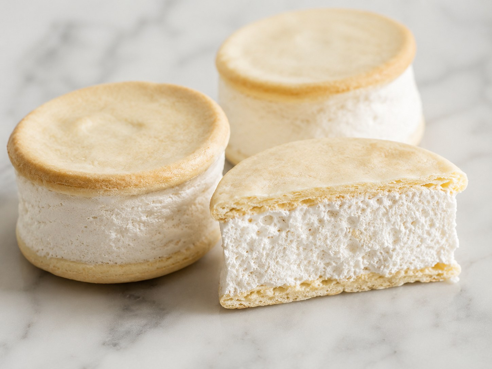
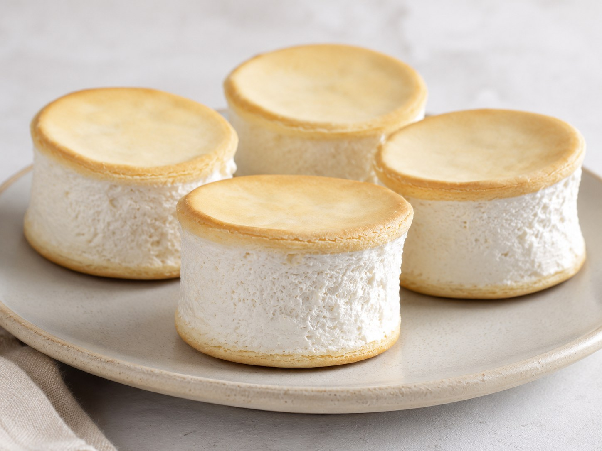
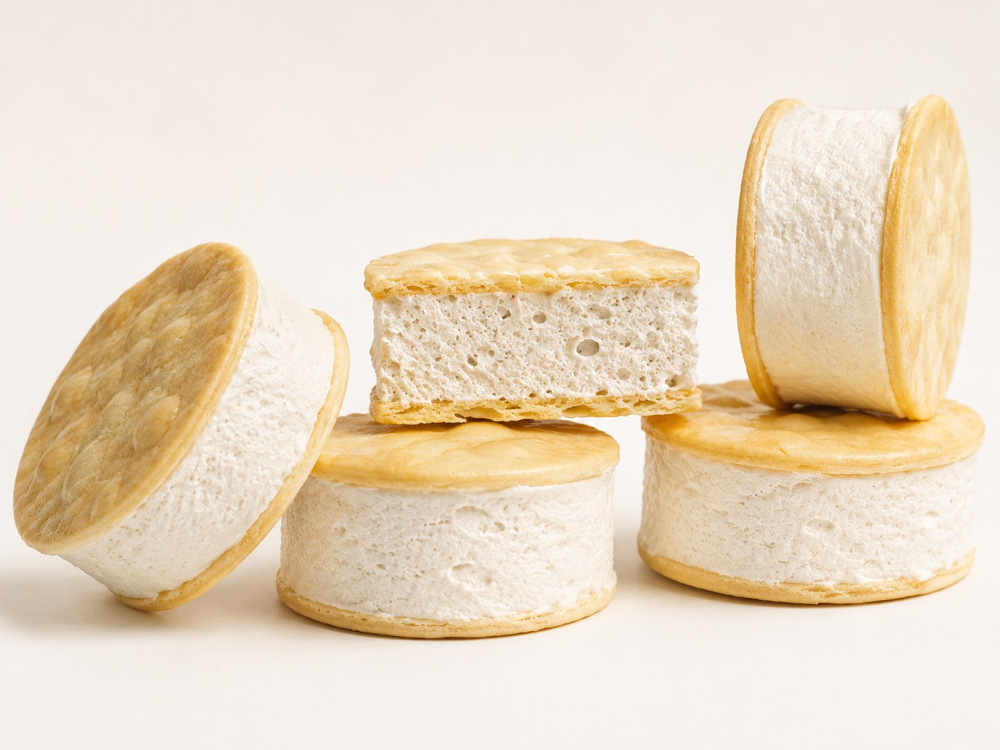
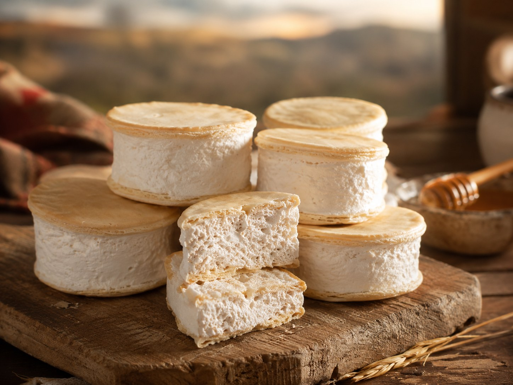

Alfajor de miel de caña
Un alfajor regional de tapitas finas, masa perfumada con anís y un relleno merengado sostenido, preparado con almíbar de miel de caña.

Sabor del norte en capas
El alfajor de miel de caña se relaciona con Misky Stack por su construcción simple y precisa: dos tapas finas, un relleno merengado y el sabor profundo de la miel de caña. Es una forma de mostrar tradición regional con presentación limpia y actual.
Ingredientes
Masa
- 500 g de harina 0000
- 1 cucharadita de sal fina
- 1 cucharadita de anís en grano
- 100 g de yema de huevo, 5 o 6 unidades
- 50 g de grasa vacuna derretida
- 50 ml de agua
- 50 ml de alcohol alimenticio
Relleno
- 60 ml de agua
- 100 g de azúcar blanca
- 200 g de miel de caña
- 100 g de clara de huevo
Preparación
- Hacer una corona con la harina, la sal fina y el anís.
- Agregar en el centro las yemas, la grasa derretida, el agua y el alcohol.
- Amasar hasta obtener una masa lisa y homogénea.
- Tapar la masa y dejarla reposar durante media hora.
- Estirar con palote o amasadora hasta lograr un espesor de 3 mm.
- Cortar tapas con aro de 5 cm de diámetro.
- Pinchar la superficie de las tapas y colocarlas en placas con papel vegetal.
- Cocinar en horno precalentado a 170 grados durante 8 a 10 minutos. Es normal que los bordes se curven.
- Para el relleno, colocar el agua, el azúcar y la miel de caña en una cacerola.
- Llevar el almíbar a 148 o 150 grados.
- Batir las claras a nieve en un bowl aparte.
- Volcar el almíbar caliente sobre las claras en forma de hilo, sin dejar de batir.
- Continuar batiendo hasta que la preparación llegue a temperatura ambiente y se obtenga una crema merengada firme.
- Rellenar las tapas con la crema merengada y cerrar los alfajores con cuidado.
Presentaciones



